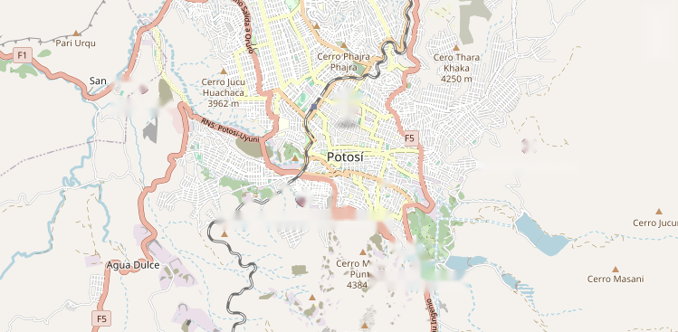

Brindar servicios turísticos memorables, seguros y sostenibles, conectando a los viajeros de todo el mundo con la riqueza histórica, arqueológica y natural de Potosí y Bolivia, preservando nuestra identidad local.
Turismo en Potosí · Bolivia
Macuquina Tours
Recorre con guía local los lugares más emblemáticos de la Villa Imperial y descubre las leyendas que guarda la ciudad de la plata.
Guías localesConocen cada rincón de Potosí
Recojo claroPunto de inicio y final definidos
De 1 hora a 2 díasElige el recorrido a tu medida
Reserva por WhatsAppRespuesta directa y sin vueltas
Potosí
Una ciudad construida sobre una montaña de plata.
Fundada en 1545 a los pies del Cerro Rico, Potosí fue una de las ciudades más ricas del mundo. Hoy conserva su centro colonial, sus conventos, su Casa de Moneda y una tradición minera que sigue viva. Y cada rincón guarda una leyenda que los potosinos cuentan de generación en generación.
+4.000 msobre el nivel del mar
UNESCOPatrimonio de la Humanidad
9lugares y recorridos
16leyendas potosinas
Lugares emblemáticos
Elige tu recorrido por Potosí
Cada lugar muestra su recorrido completo: dónde te recogemos, por dónde pasamos y dónde termina. Toca una tarjeta para verlo.
Mira y conoce
La historia de Potosí
De Sumaj Orcko a la Villa Imperial: el cerro, la plata y la ciudad que cambió el mundo.
Antes de venir
Recomendaciones para tu visita
Potosí está a más de 4.000 metros de altura. Unos cuidados simples hacen tu viaje mucho más cómodo.
Aclimátate
Descansa el primer día, camina despacio y evita comidas pesadas.
Toma agua
La altura deshidrata. Lleva una botella en todos los recorridos.
Abrígate en capas
Hace sol de día y frío al atardecer y de noche. Lleva gorro y protector solar.
Calzado cómodo
Las calles coloniales son empedradas y con cuestas.
Ubica tus lugares
Dónde está cada recorrido
Toca una zona del mapa para ver los recorridos que salen hacia ella. Los puntos son orientativos.

Ubicaciones orientativas · Mapa © colaboradores de OpenStreetMap
Así de fácil
Cómo es tu recorrido
1
Reserva
Elige tu lugar y escríbenos por WhatsApp con la fecha y el número de personas.
2
Te recogemos
Nos encontramos en el punto de recojo indicado en cada recorrido.
3
Recorres con guía
Paradas explicadas por un guía local, con tiempo para fotos y preguntas.
4
Regresas
Terminamos en el punto final del recorrido, normalmente donde empezamos.
Preguntas frecuentes
Lo que más nos preguntan
¿Dónde me recogen?
En cada recorrido indicamos el punto de recojo. Por defecto es la Plaza 10 de Noviembre, frente a la Catedral. Escríbenos si prefieres otro lugar del centro.
¿Cómo reservo?
Abre el recorrido que te interesa y toca “Reservar por WhatsApp”. Te confirmamos disponibilidad, horario y detalles.
¿Qué debo llevar?
Ropa de abrigo en capas, protector solar, agua, calzado cómodo y algo de efectivo. Para el Ojo del Inca, traje de baño y toalla.
¿Es difícil por la altura?
Potosí está a más de 4.000 m. Si llegas de zonas bajas, descansa un día antes y camina despacio. El tour de minas y la caminata del Kari Kari requieren buena condición física.
Quiénes somos
Macuquina Tours
“Descubre la Historia, Vive la Aventura”
Posicionarnos para el 2030 como la agencia receptiva de referencia en Bolivia y Sudamérica, reconocida internacionalmente por la excelencia en el servicio, la sostenibilidad y la difusión patrimonial.
- Autenticidad: respeto profundo por las raíces locales.
- Seguridad: rigor operativo en cada excursión.
- Hospitalidad: calidez originaria en el trato.
- Pasión: orgullo por nuestra tierra y cultura.
Contáctanos
Teléfono fijo+591 (2) 622-4040
Celular / Móvil+591 71234567
DirecciónCalle Ayacucho #45, Potosí - Bolivia
Potosí te espera. Reserva tu recorrido con Macuquina Tours.
Escríbenos y armamos tu visita.